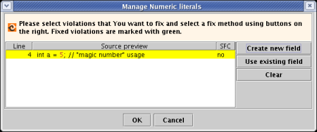
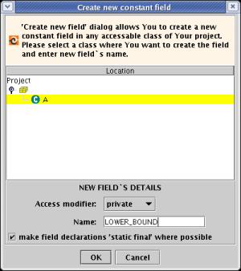
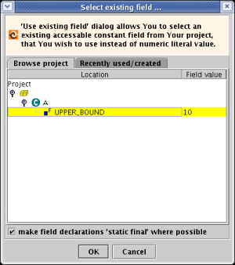

This audit rule reports use of so called "magic numbers". Code with many magic numbers is often hard to understand.
class A {
void someMethod(){
int a = 5; // "magic number" usage
while (a < 10){ // another "magic number" usage
doSomethingWith(a);
a++;
}
}
}
You may want to refactor this code to something like this:
class A {
static final int LOWER_BOUND = 5;
static final int UPPER_BOUND = 10;
void someMethod(){
int a = LOWER_BOUND;
while (a < UPPER_BOUND){
doSomethingWith(a);
a++;
}
}
}
'Manage numeric literals' corrective action will automaticaly propose to make such fields static final on run. Read more about 'Manage numeric literals' action below.
Optionaly it is possible to enable/disable reporting "magic numbers" in collections` constructors. Check out option "skip literals when initializing collections".
void someMethod(){
List list = new ArrayList(10); // can be skiped optionaly
}
You can specify list of numeric literals, that You would like this audit rule to skip. Just add a new literal to list. '-1', '0' and '1' values are skiped by default, but they can be removed from the list as well.

Main dialog
Even if You run 'Manage numeric literals' action on a single violation, the action will collect all usages of this literal in owner class. Fixed violations are marked with green background. To fix violations select some of them (multiselection is supported) and press "Create new field" or "Use existing field" buttons.
If value in SFC column is 'yes', it means that numeric literal was used initializing some field and that this field can be made 'static final' without any harm. Such violations are fixed by default on action run. But You can clear those changes by selecting these violations and clicking 'CLEAR' button. However, the action will propose to make these field 'static final' every time You try to fix them using "Create new field" or "Use existing field" buttons.

Create new field dialog
Select class where You want to create new constant field, select access modifier for Your new constant and enter a name for it.

Use existing field dialog
Concede that You already have an UPPER_BOUND constant defined for this case somewhere in Your project. Just find this field in Your project using "Use existing constant" dialog and corrective action will replace numeric literal usage with constant field usage.